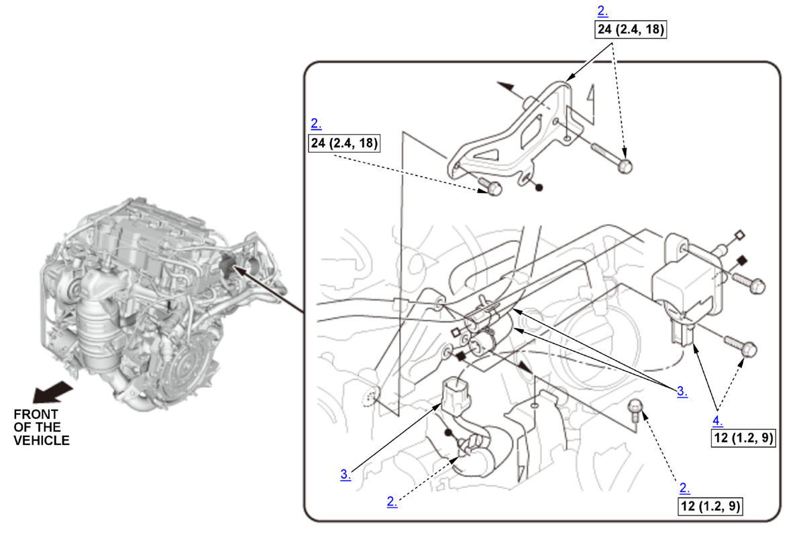

Removal and Installation: Procedure
NOTE:
Numbered call-outs in figure pertain to list numbers in following procedure.

 Courtesy of HONDA, U.S.A., INC.
Courtesy of HONDA, U.S.A., INC. |
Torque: N.m (kgf.m, lbf.ft) |
- Intake Air Duct - Remove
- PCS Guard - Remove
- Hoses and Connector (EVAP Canister Purge Valve) - Disconnect
- EVAP Canister Purge Valve - Remove
- All Removed Parts - Install
1. Install the parts in the reverse order of removal.
NOTE: Make sure the hose clamps are properly positioned and tightened .